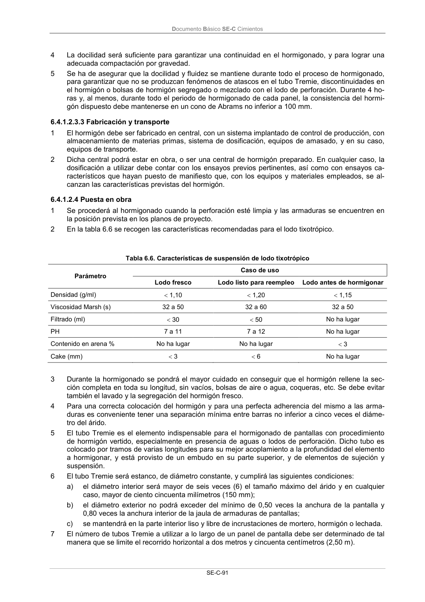

DB-SE-C Cimientos · edición 2019-12-20 · capa oficial
Documento DB-SE-C-oficial · SHA-256 del PDF a71133f4b0dca253e45ea3071c70f2a512354bcc5cd841bf89b1a502f567ac5e
Copia fiel del PDF fuente · Fuente oficial
Ficha de la disposición en la fuente oficial
Formatos: JSON del segmento · Markdown
6.4.1.2.3 Dosificación y propiedades del hormigón 6.4.1.2.3.1 Dosificación del hormigón 1 Los hormigones para pantallas deben ajustar su dosificación a lo que se indica a continuación, sal- vo indicación en contra en el proyecto. 2 El contenido mínimo de cemento, así como la relación agua/cemento respetarán las prescripciones sobre durabilidad indicadas en el capítulo correspondiente de la Instrucción EHE. 3 En pantallas continuas de hormigón armado, se recomienda que el contenido de cemento sea ma- yor o igual de trescientos veinticinco kilogramos por metro cúbico (325 kg/m3) para hormigón vertido en seco en terrenos sin influencia del nivel freático, o mayor o igual de trescientos setenta y cinco kilogramos por metro cúbico (375 kg/m3) para hormigón sumergido. 4 En la tabla 6.5 se recoge el contenido mínimo de cemento recomendado en función de la dimensión máxima de los áridos (UNE EN 1538:2011+A1:2016): Tabla 6.5. Contenido mínimo de cemento Dimensión máxima de los áridos (mm)Contenido mínimo de cemento (kg/m3) 32 350 25 370 20 385 16 400 5 El contenido de partículas de tamaño inferior a ciento veinticinco micras (0,125 mm), incluido el cemento, debe ser igual o inferior a cuatrocientos cincuenta kilogramos por metro cúbico (450 kg/m3) para tamaños máximos de árido inferiores o iguales a 16 milímetros, y cuatrocientos kilo- gramos por metro cúbico (400 kg/m3) para el resto de los casos. 6 La relación agua/cemento será la adecuada para las condiciones de puesta en obra, y debe ser aprobada explícitamente por el Director de Obra. El valor de la relación agua cemento debe estar comprendido entre cero con cuarenta y cinco (0,45) y cero con seis (0,6). 6.4.1.2.3.2 Propiedades del hormigón 1 La resistencia característica mínima del hormigón será la indicada en el proyecto o, en su defecto, por el Director de Obra, y nunca inferior a lo especificado en la Instrucción EHE. 2 El hormigón no será atacable por el terreno circundante, o por las aguas que a través de él circulen, debiéndose cumplir la relación agua/cemento y contenido mínimo de cemento especificados en la Instrucción EHE para cada tipo de ambiente. 3 La consistencia del hormigón fresco justo antes del hormigonado debe corresponder a un asiento del cono de Abrams entre ciento sesenta milímetros (160 mm) y doscientos veinte milímetros (220 mm). Se recomienda un valor no inferior a ciento ochenta milímetros (180 mm). Documento Básico SE-C Cimientos SE-C-91 4 La docilidad será suficiente para garantizar una continuidad en el hormigonado, y para lograr una adecuada compactación por gravedad. 5 Se ha de asegurar que la docilidad y fluidez se mantiene durante todo el proceso de hormigonado, para garantizar que no se produzcan fenómenos de atascos en el tubo Tremie, discontinuidades en el hormigón o bolsas de hormigón segregado o mezclado con el lodo de perforación. Durante 4 ho- ras y, al menos, durante todo el periodo de hormigonado de cada panel, la consistencia del hormi- gón dispuesto debe mantenerse en un cono de Abrams no inferior a 100 mm. 6.4.1.2.3.3 Fabricación y transporte 1 El hormigón debe ser fabricado en central, con un sistema implantado de control de producción, con almacenamiento de materias primas, sistema de dosificación, equipos de amasado, y en su caso, equipos de transporte. 2 Dicha central podrá estar en obra, o ser una central de hormigón preparado. En cualquier caso, la dosificación a utilizar debe contar con los ensayos previos pertinentes, así como con ensayos ca- racterísticos que hayan puesto de manifiesto que, con los equipos y materiales empleados, se al- canzan las características previstas del hormigón.
